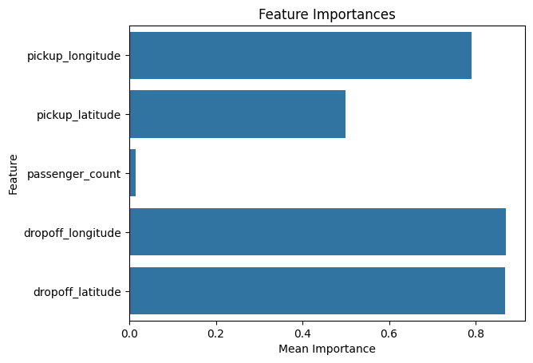
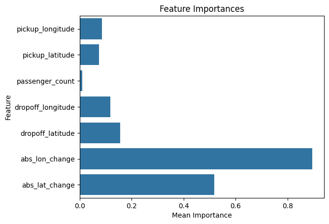

#import eli5
#from eli5.sklearn import PermutationImportance
from sklearn.datasets import load_iris
import numpy as np
import pandas as pd
from sklearn.model_selection import train_test_split
from sklearn.ensemble import RandomForestClassifier- Process-
get a trained model
calculate the loss function
return the data into orignal orde
data = pd.read_csv('FIFA 2018 Statistics.csv')
data.info()<class 'pandas.core.frame.DataFrame'>
RangeIndex: 128 entries, 0 to 127
Data columns (total 27 columns):
# Column Non-Null Count Dtype
--- ------ -------------- -----
0 Date 128 non-null object
1 Team 128 non-null object
2 Opponent 128 non-null object
3 Goal Scored 128 non-null int64
4 Ball Possession % 128 non-null int64
5 Attempts 128 non-null int64
6 On-Target 128 non-null int64
7 Off-Target 128 non-null int64
8 Blocked 128 non-null int64
9 Corners 128 non-null int64
10 Offsides 128 non-null int64
11 Free Kicks 128 non-null int64
12 Saves 128 non-null int64
13 Pass Accuracy % 128 non-null int64
14 Passes 128 non-null int64
15 Distance Covered (Kms) 128 non-null int64
16 Fouls Committed 128 non-null int64
17 Yellow Card 128 non-null int64
18 Yellow & Red 128 non-null int64
19 Red 128 non-null int64
20 Man of the Match 128 non-null object
21 1st Goal 94 non-null float64
22 Round 128 non-null object
23 PSO 128 non-null object
24 Goals in PSO 128 non-null int64
25 Own goals 12 non-null float64
26 Own goal Time 12 non-null float64
dtypes: float64(3), int64(18), object(6)
memory usage: 27.1+ KBdata.head()| Date | Team | Opponent | Goal Scored | Ball Possession % | Attempts | On-Target | Off-Target | Blocked | Corners | ... | Yellow Card | Yellow & Red | Red | Man of the Match | 1st Goal | Round | PSO | Goals in PSO | Own goals | Own goal Time | |
|---|---|---|---|---|---|---|---|---|---|---|---|---|---|---|---|---|---|---|---|---|---|
| 0 | 14-06-2018 | Russia | Saudi Arabia | 5 | 40 | 13 | 7 | 3 | 3 | 6 | ... | 0 | 0 | 0 | Yes | 12.0 | Group Stage | No | 0 | NaN | NaN |
| 1 | 14-06-2018 | Saudi Arabia | Russia | 0 | 60 | 6 | 0 | 3 | 3 | 2 | ... | 0 | 0 | 0 | No | NaN | Group Stage | No | 0 | NaN | NaN |
| 2 | 15-06-2018 | Egypt | Uruguay | 0 | 43 | 8 | 3 | 3 | 2 | 0 | ... | 2 | 0 | 0 | No | NaN | Group Stage | No | 0 | NaN | NaN |
| 3 | 15-06-2018 | Uruguay | Egypt | 1 | 57 | 14 | 4 | 6 | 4 | 5 | ... | 0 | 0 | 0 | Yes | 89.0 | Group Stage | No | 0 | NaN | NaN |
| 4 | 15-06-2018 | Morocco | Iran | 0 | 64 | 13 | 3 | 6 | 4 | 5 | ... | 1 | 0 | 0 | No | NaN | Group Stage | No | 0 | 1.0 | 90.0 |
5 rows × 27 columns
#
y = (data['Man of the Match'] == 'Yes')
feature_names = [i for i in data.columns if data[i].dtype in [np.int64]] #choosing integer values
X = data[feature_names]
train_X, val_X, train_y, val_y = train_test_split(X, y, random_state = 1)
my_model = RandomForestClassifier(n_estimators = 100,
random_state = 0).fit(train_X, train_y)eli5 library for permutation importance
Practice
import pandas as pd
from sklearn.ensemble import RandomForestRegressor
from sklearn.linear_model import LinearRegression
from sklearn.model_selection import train_test_split
import seaborn as sns
import matplotlib.pyplot as plt
data2= pd.read_csv('train.csv')data2.info()<class 'pandas.core.frame.DataFrame'>
RangeIndex: 50000 entries, 0 to 49999
Data columns (total 8 columns):
# Column Non-Null Count Dtype
--- ------ -------------- -----
0 key 50000 non-null object
1 fare_amount 50000 non-null float64
2 pickup_datetime 50000 non-null object
3 pickup_longitude 50000 non-null float64
4 pickup_latitude 50000 non-null float64
5 dropoff_longitude 50000 non-null float64
6 dropoff_latitude 50000 non-null float64
7 passenger_count 50000 non-null int64
dtypes: float64(5), int64(1), object(2)
memory usage: 3.1+ MBdata2.columnsIndex(['key', 'fare_amount', 'pickup_datetime', 'pickup_longitude',
'pickup_latitude', 'dropoff_longitude', 'dropoff_latitude',
'passenger_count'],
dtype='object')data2.head()| key | fare_amount | pickup_datetime | pickup_longitude | pickup_latitude | dropoff_longitude | dropoff_latitude | passenger_count | |
|---|---|---|---|---|---|---|---|---|
| 0 | 2009-06-15 17:26:21.0000001 | 4.5 | 2009-06-15 17:26:21 UTC | -73.844311 | 40.721319 | -73.841610 | 40.712278 | 1 |
| 1 | 2010-01-05 16:52:16.0000002 | 16.9 | 2010-01-05 16:52:16 UTC | -74.016048 | 40.711303 | -73.979268 | 40.782004 | 1 |
| 2 | 2011-08-18 00:35:00.00000049 | 5.7 | 2011-08-18 00:35:00 UTC | -73.982738 | 40.761270 | -73.991242 | 40.750562 | 2 |
| 3 | 2012-04-21 04:30:42.0000001 | 7.7 | 2012-04-21 04:30:42 UTC | -73.987130 | 40.733143 | -73.991567 | 40.758092 | 1 |
| 4 | 2010-03-09 07:51:00.000000135 | 5.3 | 2010-03-09 07:51:00 UTC | -73.968095 | 40.768008 | -73.956655 | 40.783762 | 1 |
# Remove data with extreme outlier coordinates or negative fares
data2 = data2.query('pickup_latitude > 40.7 and pickup_latitude < 40.8 and ' +
'dropoff_latitude > 40.7 and dropoff_latitude < 40.8 and ' +
'pickup_longitude > -74 and pickup_longitude < -73.9 and ' +
'dropoff_longitude > -74 and dropoff_longitude < -73.9 and ' +
'fare_amount > 0'
)# assigning prediction target
y = data2.fare_amount
base_features = ['pickup_longitude',
'pickup_latitude',
'dropoff_longitude',
'dropoff_latitude',
'passenger_count']
X = data2[base_features]# train the model
train_X, val_X, train_y, val_y = train_test_split(X, y, random_state = 1)
first_model = RandomForestRegressor(n_estimators = 50, random_state = 1).fit(train_X, train_y)train_X.describe()| pickup_longitude | pickup_latitude | dropoff_longitude | dropoff_latitude | passenger_count | |
|---|---|---|---|---|---|
| count | 37500.000000 | 37500.000000 | 37500.000000 | 37500.000000 | 37500.000000 |
| mean | -72.520688 | 39.931410 | -72.514256 | 39.930631 | 1.670827 |
| std | 10.360818 | 6.010290 | 10.378988 | 6.014321 | 1.293083 |
| min | -75.414728 | -74.006893 | -84.654241 | -74.006377 | 0.000000 |
| 25% | -73.992092 | 40.735008 | -73.991196 | 40.734333 | 1.000000 |
| 50% | -73.981811 | 40.752825 | -73.980012 | 40.753397 | 1.000000 |
| 75% | -73.967051 | 40.767428 | -73.963292 | 40.768243 | 2.000000 |
| max | 40.783472 | 42.160275 | 40.802437 | 42.168717 | 6.000000 |
train_y.describe()count 37500.000000
mean 11.402322
std 9.715174
min -5.000000
25% 6.000000
50% 8.500000
75% 12.500000
max 180.000000
Name: fare_amount, dtype: float64train_X, val_X, train_y, val_y = train_test_split(X, y, random_state =1)
first_model = RandomForestRegressor(n_estimators = 50, random_state = 1).fit(train_X, train_y)from sklearn.inspection import permutation_importanceresult = permutation_importance(first_model, train_X, train_y, n_repeats=30, random_state=0)# resulting importances
importance_df = pd.DataFrame({'feature': base_features,
'importance_mean': result.importances_mean,
'importance_std' : result.importances_std})
importance_df = importance_df.sort_values('feature',
ascending = False)# visualize
sns.barplot(x = 'importance_mean', y = 'feature', data= importance_df)
plt.title('Feature Importances')
plt.xlabel('Mean Importance')
plt.ylabel('Feature')
plt.show()
Hypothesis testing
Why are latitudes have larger effect?
Travel might tend to have greater latitude distances than longitude distances.
Different parts of the city might have different pricing rules (e.g. price per mile), and pricing rules could vary more by latitude than longitude.
Tolls might be greater on roads going North<->South (changing latitude) than on roads going East <-> West (changing longitude). Thus latitude would have a larger effect on the prediction because it captures the amount of the tolls.
# reducing length of X
X_trimmed = X.iloc[:len(y)]# create new features
data2['abs_lon_change'] = abs(data2.dropoff_longitude - data2.pickup_longitude)
data2['abs_lat_change'] = abs(data2.dropoff_latitude - data2.pickup_latitude)
features_2 = ['pickup_longitude',
'pickup_latitude',
'dropoff_longitude',
'dropoff_latitude',
'passenger_count',
'abs_lon_change',
'abs_lat_change']
X= data2[features_2]
new_train_X, new_val_X, new_train_y, new_val_y = train_test_split(X, y, random_state = 1)
second_model = RandomForestRegressor(n_estimators = 50, random_state = 1).fit(new_train_X, new_train_y)result2 = permutation_importance(second_model, new_train_X, new_train_y, n_repeats=30, random_state=1)# resulting importances
importance_df2 = pd.DataFrame({'feature': features_2,
'importance_mean': result2.importances_mean,
'importance_std' : result2.importances_std})
importance_df2 = importance_df2.sort_values('feature',
ascending = False)# visualize
sns.barplot(x = 'importance_mean', y = 'feature', data= importance_df2)
plt.title('Feature Importances')
plt.xlabel('Mean Importance')
plt.ylabel('Feature')
plt.show()
X.describe()| pickup_longitude | pickup_latitude | dropoff_longitude | dropoff_latitude | passenger_count | abs_lon_change | abs_lat_change | |
|---|---|---|---|---|---|---|---|
| count | 50000.000000 | 50000.000000 | 50000.000000 | 50000.000000 | 50000.000000 | 50000.000000 | 50000.000000 |
| mean | -72.509756 | 39.933759 | -72.504616 | 39.926251 | 1.667840 | 0.151433 | 0.097776 |
| std | 10.393860 | 6.224857 | 10.407570 | 6.014737 | 1.289195 | 3.077049 | 2.326365 |
| min | -75.423848 | -74.006893 | -84.654241 | -74.006377 | 0.000000 | 0.000000 | 0.000000 |
| 25% | -73.992062 | 40.734880 | -73.991152 | 40.734372 | 1.000000 | 0.005778 | 0.006602 |
| 50% | -73.981840 | 40.752678 | -73.980082 | 40.753372 | 1.000000 | 0.012526 | 0.013928 |
| 75% | -73.967148 | 40.767360 | -73.963584 | 40.768167 | 2.000000 | 0.023967 | 0.027085 |
| max | 40.783472 | 401.083332 | 40.851027 | 43.415190 | 6.000000 | 74.014917 | 360.304405 |
print(X.info())<class 'pandas.core.frame.DataFrame'>
RangeIndex: 50000 entries, 0 to 49999
Data columns (total 7 columns):
# Column Non-Null Count Dtype
--- ------ -------------- -----
0 pickup_longitude 50000 non-null float64
1 pickup_latitude 50000 non-null float64
2 dropoff_longitude 50000 non-null float64
3 dropoff_latitude 50000 non-null float64
4 passenger_count 50000 non-null int64
5 abs_lon_change 50000 non-null float64
6 abs_lat_change 50000 non-null float64
dtypes: float64(6), int64(1)
memory usage: 2.7 MB
Noneprint(y.info())<class 'pandas.core.series.Series'>
Index: 31289 entries, 2 to 49999
Series name: fare_amount
Non-Null Count Dtype
-------------- -----
31289 non-null float64
dtypes: float64(1)
memory usage: 488.9 KB
None